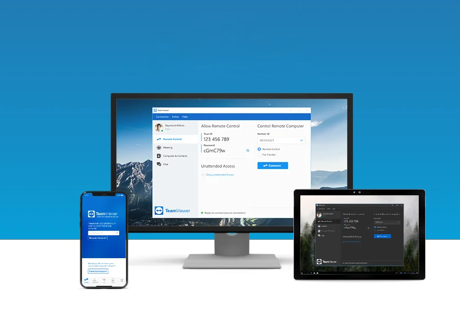
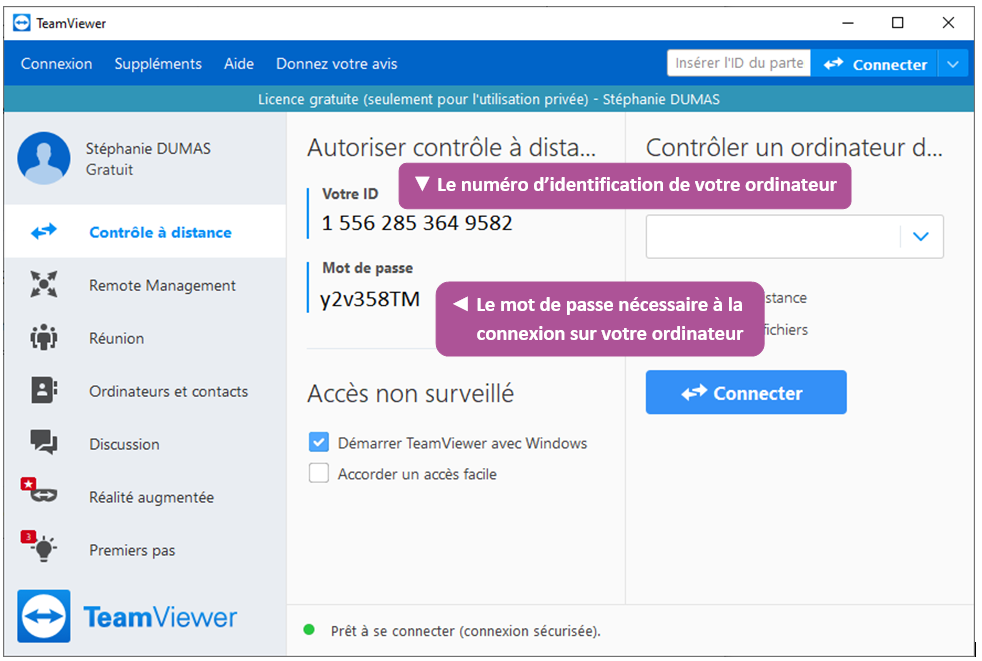

Besoin de dépanner un proche en difficulté avec son PC ou son Mac mais vous n'êtes pas sur place ? Prenez le contrôle de son ordinateur à distance pour effectuer les manipulations nécessaires via Internet avec TeamViewer.
Pas toujours évident d'aider un ami ou un membre de la famille qui rencontre des problèmes avec son ordinateur. Surtout lorsque l'on n'est pas sur place et que l'on ne peut pas constater soi-même les maux qui touchent la machine. Se contenter d'une description des symptômes par téléphone ou messagerie et donner des instructions ou des manipulations à effectuer « en aveugle » peut prendre des heures et parfois empirer la situation en cas de fausse manœuvre, d'inexpérience ou d'incompréhension.
Qu’est-ce que c’est que TeamViever
TeamViewer est un logiciel de contrôle à distance qui permet de prendre le contrôle d'un ordinateur à distance. Son interface est simple et intuitive, avec des options de partage d'écran, de chat et de transfert de fichiers. Elle est conçue pour être facile à utiliser, même pour les débutants.
Utilités et avantages de TeamViewer
TeamViewer est un logiciel de contrôle à distance et de collaboration en ligne très populaire. Voici dix façons différentes d'utiliser TeamViewer :
Démarrer une réunion en utilisant une présentation, un appel vidéo ou un appel téléphonique. Vous pouvez également planifier et gérer des réunions.
Installer TeamViewer sur votre ordinateur de bureau, créer un compte et configurer l'accès facile à partir de l'onglet Contrôle à distance.
Télécharger et installer TeamViewer sur votre système d'exploitation, que ce soit Windows, Mac, Linux ou même Android et iOS.
Utiliser TeamViewer Tensor pour accéder à distance et offrir un support technique aux grandes entreprises.
Utiliser TeamViewer Remote Management pour gérer, surveiller, suivre, corriger et protéger vos appareils et vos logiciels.
Utiliser TeamViewer Engage, une plateforme d'engagement client pour les ventes en ligne, le service client et les consultations vidéo.
Contrôler un ordinateur à distance en cochant la case en face de TeamViewer, puis en cliquant sur le bouton Demande d'accès face à Accès périphériques.
Gérer des bureaux d'assistance sur le cloud et transférer des fichiers en utilisant le logiciel multifonction TeamViewer.
Utiliser la version gratuite de TeamViewer pour des utilisations personnelles.
Contrôler l'utilisation de TeamViewer et les droits d'accès dans toute votre organisation à l'aide d'un moteur de règles que vous configurez dans la console de gestion.
Installer et utiliser TeamViewer
Téléchargez TeamViewer à partir de la page officielle et installez-le sur votre ordinateur.
Créez un compte TeamViewer et configurez l'accès facile à partir de l'onglet Contrôle à distance . Pour plus de sécurité, vous pouvez activer l'authentification à deux facteurs via vos paramètres de profil.
Pour accéder à l'ordinateur distant, demandez à la personne à l'autre bout d'ouvrir TeamViewer et de vous communiquer son ID TeamViewer et son mot de passe temporaire.
Entrez l'ID et le mot de passe dans l'interface de TeamViewer de votre ordinateur et cliquez sur Connexion. Une fois connecté, vous pouvez contrôler l'ordinateur distant comme si vous étiez devant lui, transférer des fichiers, discuter avec la personne via la fonction de chat et bien plus encore.
Partager